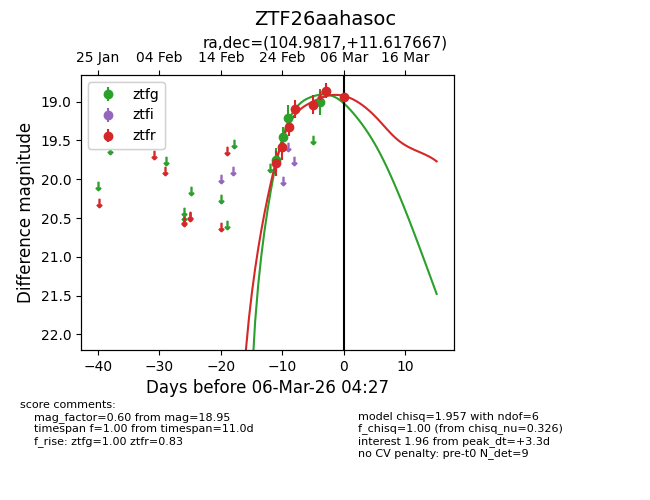
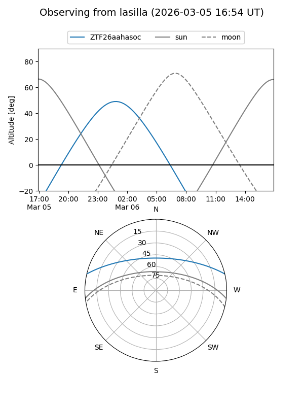
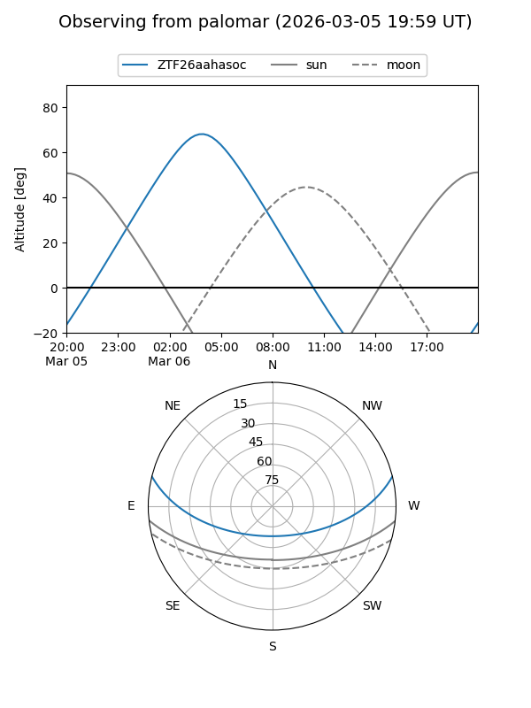
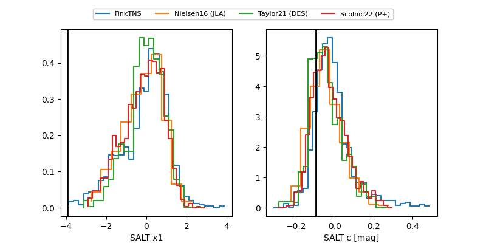

ZTF26aahasoc
Target ZTF26aahasoc at 2026-03-06 04:29
Aliases and brokers:
FINK: link
Lasair: link
ALeRCE: link
alt names
ZTF26aahasoc (ztf,fink_ztf)
Coordinates:
equatorial (ra, dec) = 104.9817,+11.61767
equatorial (HMS+DMS) = 06:59:55.62,+11:37:03.60
galactic (l, b) = (203.4955,+7.12929)
Flags:
Photometry:
last ztfg=19.01, ztfr=18.95
4 ztfg, 7 ztfr detections
Lightcurve

Visibility


Additional plots
